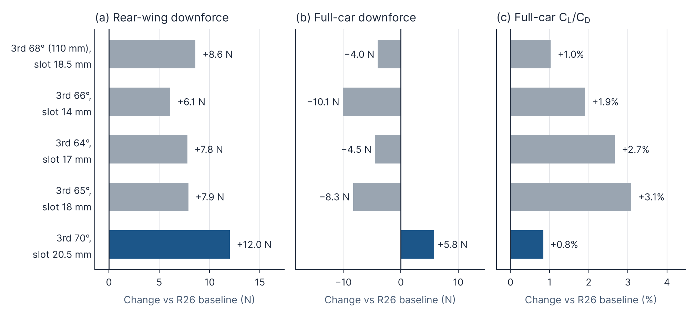
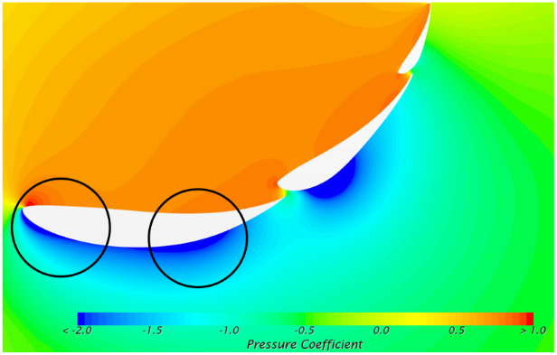
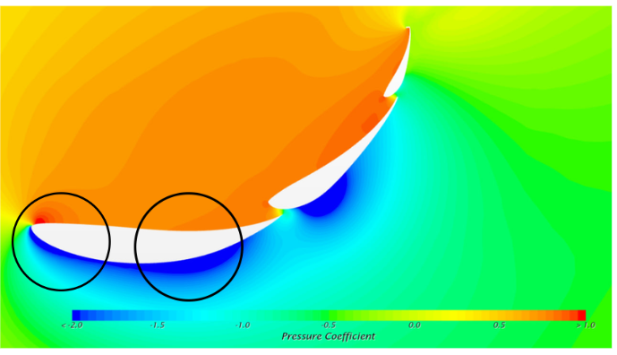
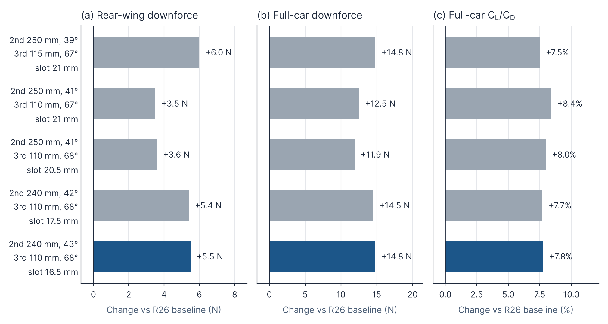
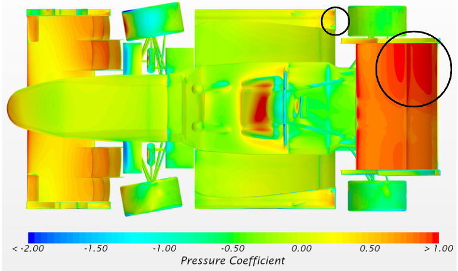
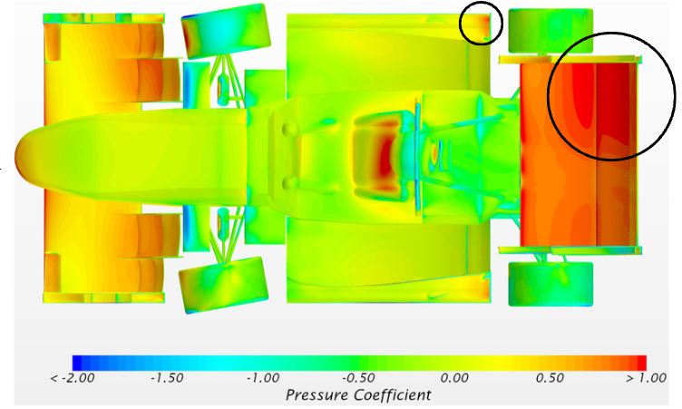
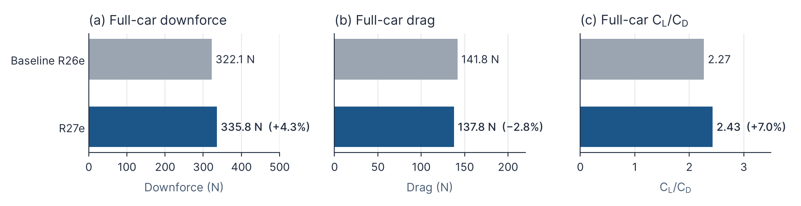

Chapter 6 · Design
6.2 Rear Wing
6.2.1 Straight-Line Optimisation
Table 2 lists the straight-line half-car simulation results. For simplicity, these values are used for comparison; actual full-car values are twice those shown.
| Configuration | Full-car downforce (N) | Full-car drag (N) | Full-car CL/CD | Rear-wing downforce (N) | Rear-wing drag (N) | Diffuser downforce (N) |
|---|---|---|---|---|---|---|
| R26 baseline | 441.0 | 168.5 | 2.623 | 142.4 | 67.0 | 102.4 |
| 3rd 70°, slot 20.5 mm (selected) | 446.8 | 167.0 | 2.645 | 154.4 | 69.5 | 99.0 |
| 3rd 68° (110 mm), slot 18.5 mm | 437.0 | 164.9 | 2.650 | 151.0 | 67.7 | 98.0 |
| 3rd 66°, slot 14 mm | 430.9 | 161.2 | 2.673 | 148.5 | 64.6 | 96.3 |
| 3rd 64°, slot 17 mm | 436.5 | 162.1 | 2.693 | 150.2 | 65.7 | 98.3 |
| 3rd 65°, slot 18 mm | 432.7 | 160.0 | 2.704 | 150.3 | 64.1 | 95.8 |

Since the aim was to increase total downforce while maintaining or improving efficiency, the selected straight-line configuration was: Main Element 3°, Second Element 40°, Third Element 70°, with a 20.5 mm slot gap between the second and third elements.
The slot lets higher-energy air from the pressure side of the second element pass through to the suction side of the third element, re-energising the boundary layer. This delays flow separation and lets the third element run at 70° while still generating useful load.


6.2.2 Cornering Optimisation
Although the straight-line simulations identified a preferred rear wing setup, our car spends most of each lap cornering rather than on straights. A further set of simulations was therefore run in a cornering condition to check whether the straight-line optimum holds when the car is turning.
Table 3 lists the cornering simulation results for the configurations tested.
| Configuration | Full-car downforce (N) | Full-car drag (N) | Full-car CL/CD | Rear-wing downforce (N) | Rear-wing drag (N) | Side-diffuser downforce (N) |
|---|---|---|---|---|---|---|
| R26 baseline | 322.0 | 141.7 | 2.27 | 131.2 | 60.3 | 53.4 |
| 250 mm, 39° / 115 mm, 67° / 21 mm | 336.8 | 138.0 | 2.440 | 137.2 | 61.6 | 60.7 |
| 250 mm, 41° / 110 mm, 67° / 21 mm | 334.5 | 135.9 | 2.461 | 134.7 | 59.7 | 61.0 |
| 250 mm, 41° / 110 mm, 68° / 20.5 mm | 333.9 | 136.3 | 2.451 | 134.8 | 60.0 | 60.6 |
| 240 mm, 42° / 110 mm, 68° / 17.5 mm | 336.5 | 137.6 | 2.445 | 136.6 | 61.2 | 61.0 |
| 240 mm, 43° / 110 mm, 68° / 16.5 mm (selected) | 336.8 | 137.5 | 2.446 | 136.7 | 61.6 | 61.1 |

Several trends emerged across the configurations. Shortening the second element from 250 mm to 240 mm and raising its angle to 42–43° recovered the downforce lost by shortening the third element from 115 mm to 110 mm. Narrowing the slot gap from 21 mm to 16.5 mm increased rear wing downforce with almost no change in drag. The 250 mm / 41° / 67° configuration had the highest CL/CD (2.461) but 2.3 N less full-car downforce, while the 250 mm / 39° / 115 mm configuration matched the selected design’s 336.8 N but with more drag and less side diffuser downforce. The selected configuration was therefore chosen for its combination of highest full-car downforce and strongest side diffuser performance, at only a small cost in efficiency.
All tested configurations improved on the R26 baseline in every metric. The selected configuration uses a 240 mm second element at 43°, a 110 mm third element at 68°, and a 16.5 mm slot gap. Compared with the baseline, it increased full-car downforce from 322.0 N to 336.8 N (+4.6%) and reduced full-car drag from 141.7 N to 137.5 N (−3.0%). Concurrently, CL/CD rose from 2.27 to 2.446 (+7.8%). Rear wing downforce increased from 131.2 N to 136.7 N (+4.2%), and side diffuser downforce rose from 53.4 N to 61.1 N (+14.4%). This shows that the new wing improves the flow around the rear of the car as well as generating more load itself.


6.2.3 Full-Car Performance Comparison
Table 4 compares the full-car results of the baseline R26e and the R27e, and Figure 14 shows the same comparison graphically.
| Car | Full-car downforce (N) | Full-car drag (N) | Full-car CL/CD |
|---|---|---|---|
| Baseline R26e | 322.06 | 141.75 | 2.27 |
| R27e | 335.78 | 137.78 | 2.43 |
| Change | +13.72 (+4.3%) | −3.97 (−2.8%) | +0.16 (+7.0%) |

Compared to the R26 baseline, the Full Car Downforce increased from 441.0N to 446.8N and the Rear Wing Downforce increased from 142.4N to 154.4N. Concurrently, the Full Car Drag decreased from 168.5N to 167.0N, leading to an increase in CL/CD and thus improved aerodynamic efficiency.